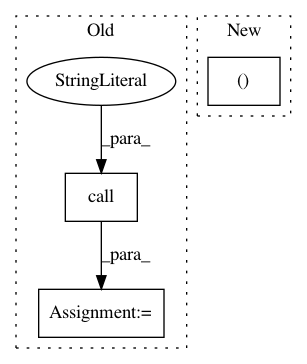

33b6c38639431160bc1a67db57931116bfe044a2,jarbas/core/tests/test_irregularities_command.py,TestMain,test_main,#TestMain#Any#Any#Any#,73
Before Change
irregularities.return_value = [({"filter": 0}, {"content": 1})]
self.command.count = 999
self.command.main()
print_calls = (
call("Preparing updates…", end="\r"),
call("1,000 reimbursements updated.", end="\r")
)
print_.assert_has_calls(print_calls)
update.assert_called_once_with(({"filter": 0}, {"content": 1}))
self.assertEqual(1000, self.command.count)
After Change
@patch("jarbas.core.management.commands.irregularities.Command.schedule_update")
@patch("jarbas.core.management.commands.irregularities.Command.update")
def test_main(self, update, schedule_update, irregularities):
irregularities.return_value = (range(21), range(21, 43))
self.command.main()
update.assert_has_calls([call()] * 2)
schedule_update.assert_has_calls(call(i) for i in range(42))
In pattern: SUPERPATTERN
Frequency: 3
Non-data size: 3
Instances
Project Name: okfn-brasil/serenata-de-amor
Commit Name: 33b6c38639431160bc1a67db57931116bfe044a2
Time: 2017-01-06
Author: cuducos@gmail.com
File Name: jarbas/core/tests/test_irregularities_command.py
Class Name: TestMain
Method Name: test_main
Project Name: NifTK/NiftyNet
Commit Name: 0a3c1aa4d67cb9c49f22a87bef180c07dfafec8a
Time: 2017-06-16
Author: wenqi.li@ucl.ac.uk
File Name: testing/get_gpu_index.py
Class Name:
Method Name:
Project Name: NifTK/NiftyNet
Commit Name: aa495c2ace9444aa5028f699ae62dddef45ab7d9
Time: 2017-06-15
Author: wenqi.li@ucl.ac.uk
File Name: testing/get_gpu_index.py
Class Name:
Method Name: